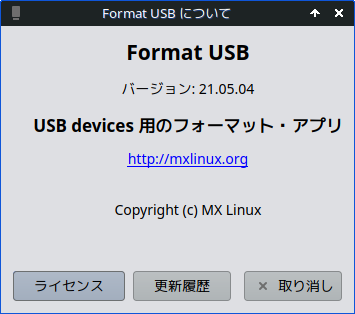
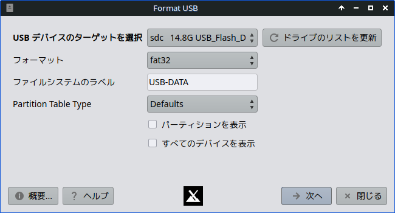
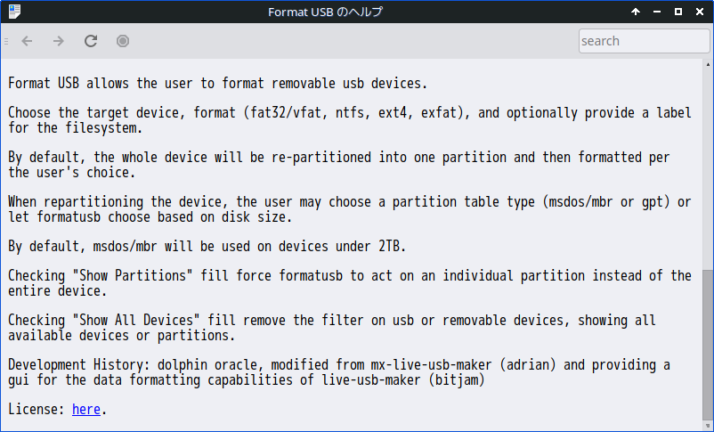
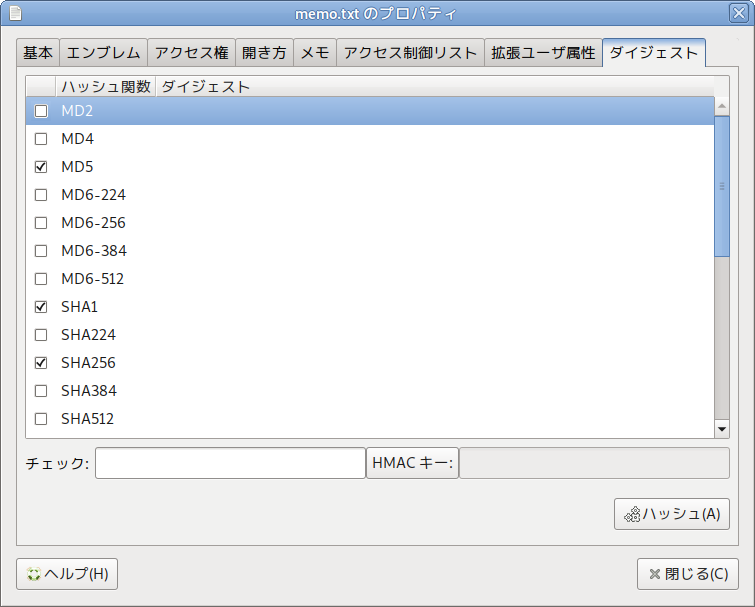
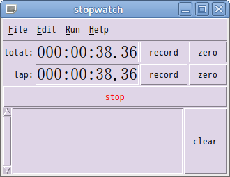

| HOME / Software | Last updated: 2022/05/13 00:28 JST |


参考までに、ヘルプと最近 (2022.4.20) 利用したときの出力ログを以下掲載しておきます。
Starting /usr/lib/formatusb/formatusb_lib 'sdc' 'vfat' 'USB-DATA' 'defaults' device is sdc format is vfat label is USB-DATA unmount partitions OK hide disk from udev OK primary partition table clear OK iso-hybrid partition table clear OK secondary partition table clear OK refresh partitions info /dev/sdc /dev/sdc: msdos partitions refresh partitions info OK unmount partitions OK bytes 3967811584 limit 2147483648000 making new dos partition table making new partition table OK refresh partitions info OK create new partition OK refresh partitions info OK formatting partitions sdc1 unmount partitions OK mkfs.fat 4.2 (2021-01-31) format partition OK unmount partitions OK label partition OK Device sdc Refresh Partitions sdc partition to mark 1 mark b The partition table has been altered. Calling ioctl() to re-read partition table. Syncing disks. Setting Partition Type OK refresh partition info OK make disk visible to udev OK
インストール方法
# apt install gtkhash
端末からの起動方法
$ gtkhash
なお MATE デスクトップ環境には、GtkHash と同様な機能を備えた caja-gtkhash という拡張機能 (extension) が組み込まれています。
caja-gtkhash の操作画面は、ファイルのアイコンを右クリック > [プロパティ] > [ダイジェスト] より開くことができます（左図参照）。
# apt-cache show lha Package: lha Priority: optional Section: non-free/utils Installed-Size: 168 Maintainer: GOTO Masanori - gotom_at_debian.org Architecture: i386 Version: 1.14i-10 Depends: libc6 (>= 2.3.2.ds1-4) Filename: pool/non-free/l/lha/lha_1.14i-10_i386.deb Size: 58206 MD5sum: 2efa3a249e403afd9b202d5ffbee33e4 Description: lzh archiver The famous lzh archiver, known from DOS. When mixing DOS and Unix you might need it. (Especially for fido <--> rfc conversions.) $ apt-get install lha パッケージリストを読みこんでいます... 完了 依存関係ツリーを作成しています... 完了 以下のパッケージが新たにインストールされます: lha アップグレード: 0 個、新規インストール: 1 個、削除: 0 個、保留: 0 個。 58.2kB のアーカイブを取得する必要があります。 展開後に追加で 172kB のディスク容量が消費されます。 取得:1 http://ftp.jp.debian.org stable/non-free lha 1.14i-10 [58.2kB] 58.2kB を 2s で取得しました (25.8kB/s) 未選択パッケージ lha を選択しています。 (データベースを読み込んでいます... 現在 114365 個のファイルとディレクトリがイン ストールされています。) (.../archives/lha_1.14i-10_i386.deb から) lha を展開しています... lha (1.14i-10) を設定しています ...
GNOME、MATE など複数のデスクトップ環境で利用できる便利な仮想定規です。
Debian 10 (buster) で一時配布が中断しましたが、Debian 11 (bullseys) 以降配布が再開されています。
画面上のオブジェクトを豊富な単位で計測 ScreenRuler は画面上に定規を表示し、そこにある他のオブジェクトを測定できます。以下の機能があります: * 水平および垂直方向に 6 つの異なる単位で計測: ピクセル、センチメートル、インチ、パイカ、ポイント、および定規の長さの パーセンテージとして * カスタマイズできる色・フォント。 * キーボードで正確に位置を制御。 * 定規を常に他のウィンドウより前に表示するオプション。 ※引用元: https://packages.debian.org/ja/bullseye/screenruler
さらに、Debian 5 (lenny) へのインストールは ScreenRuler/DebianLenny 参照。# apt install screenruler パッケージリストを読み込んでいます... 完了 依存関係ツリーを作成しています 状態情報を読み取っています... 完了 以下の追加パッケージがインストールされます: fonts-lato javascript-common libjs-jquery libruby2.3 rake ruby ruby-atk ruby-cairo ruby-cairo-gobject ruby-did-you-mean ruby-gdk-pixbuf2 ruby-gettext ruby-gio2 ruby-glib2 ruby-gobject-introspection ruby-gtk2 ruby-locale ruby-minitest ruby-net-telnet ruby-pango ruby-power-assert ruby-test-unit ruby-text ruby2.3 rubygems-integration 提案パッケージ: apache2 | lighttpd | httpd ri ruby-dev bundler 以下のパッケージが新たにインストールされます: fonts-lato javascript-common libjs-jquery libruby2.3 rake ruby ruby-atk ruby-cairo ruby-cairo-gobject ruby-did-you-mean ruby-gdk-pixbuf2 ruby-gettext ruby-gio2 ruby-glib2 ruby-gobject-introspection ruby-gtk2 ruby-locale ruby-minitest ruby-net-telnet ruby-pango ruby-power-assert ruby-test-unit ruby-text ruby2.3 rubygems-integration screenruler アップグレード: 0 個、新規インストール: 26 個、削除: 0 個、保留: 0 個。 7,494 kB のアーカイブを取得する必要があります。 この操作後に追加で 33.0 MB のディスク容量が消費されます。 続行しますか? [Y/n]

名前のとおりタイマーとして使える簡単なアプレットです。# apt install stopwatch
The Stopwatch Home Page - http://expect.sourceforge.net/stopwatch/